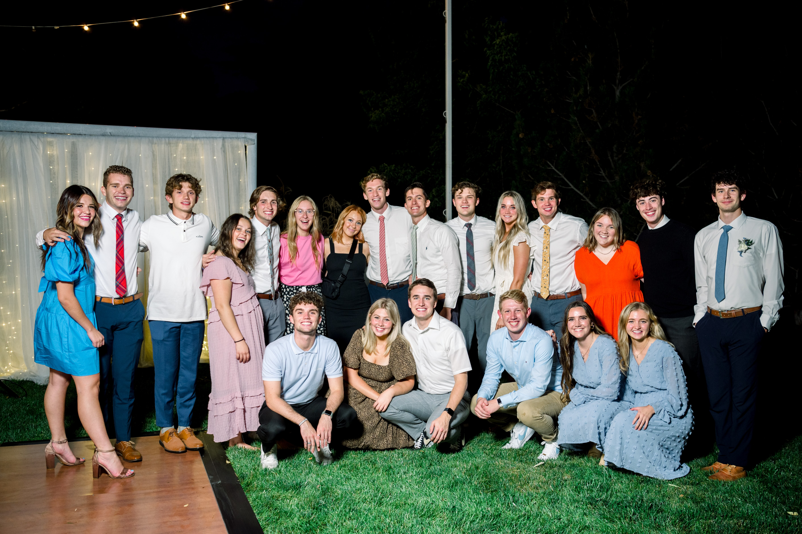
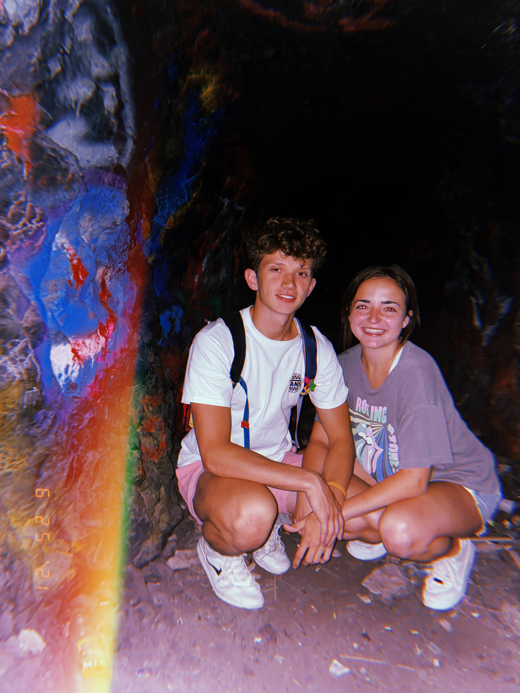
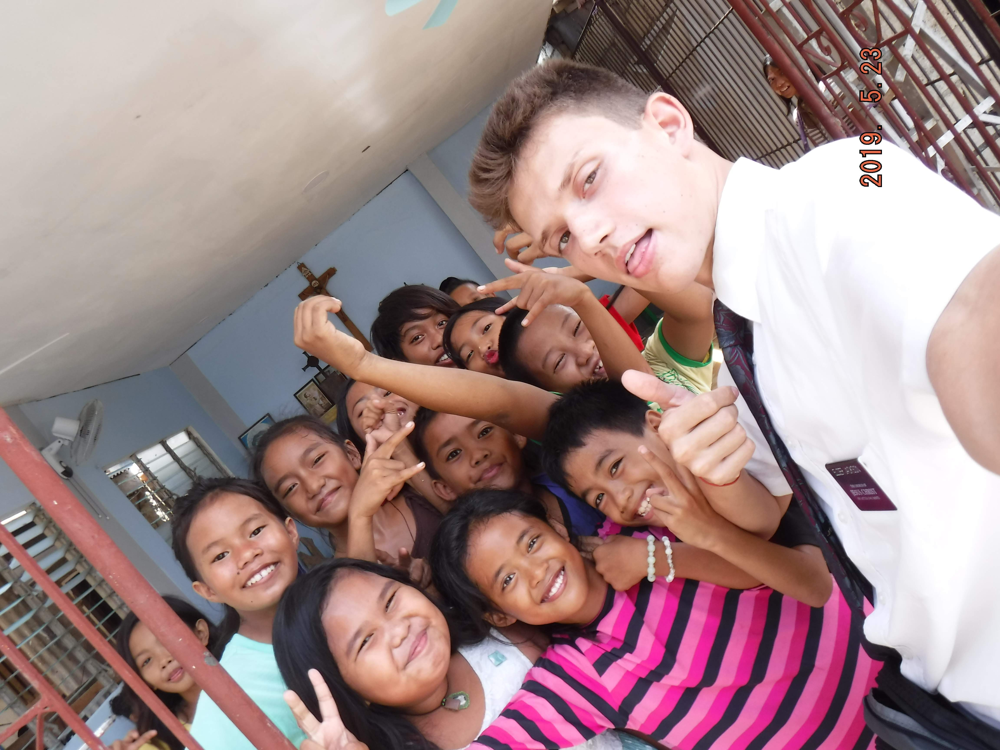

Hi there! My name is Eli Jackson and I'm a student at Brigham Young University. My education, accomplishments, skills, and experience are all pretty heavily documented in my résumé, so check that out when you get a chance. In this section, I'll mostly just tell you about myself, what I enjoying doing, and some of my big goals.
I've been lucky enough to grow up all over the country. It's been a great opportunity to meet lots of people and try new things. My family and I also became super close because of moving so much. Along the way, I've picked up a lot of hobbies. Since I moved to Utah, You can find me snowboarding, dirt biking, and hiking in the mountains most weekends. During the week when I have some free time, playing and watching sports with my friends is huge for me. I have some phenomenal friends.
Here's some pictures of them:
 I lived in the Philippines for 2 years, and that experience changed my life tremendously. I've never loved a culture so much. It was incredible to learn their language, eat their foods, and grow close to their families. As I continue along my career pathway, I hope to graduate with a Master of Information Systems Management Degree from the Marriott School of Business at BYU. I hope to work on some meaningful and exciting projects following my graduation. Ulitmately though, I would like to end up back in the Philippines. Human trafficking is a huge probelm there, and with the skills I have developed and will continue to develop, I hope to make their world a safer place to be.
Here's a photo of me in the Philippines with some of the people I would love to help protect one day.
If you have any questions or would like to get in touch with me, please don't hesitate to reach out via email, text, or through instagram.
Text: (214) 732-6011
Email: elijackson1021@gmail.com
Instagram: @elijackson21